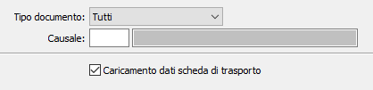

Configurazione causali
Nella configurazione delle causali è possibile impostare le causali dei Ddt clienti, delle fatture accompagnatorie e dei Ddt terzisti che devono gestire anche la scheda.

Impostando su tipo documento tutti e abilitando il flag “Caricamento dati scheda di trasporto”, per tutti i documenti vengono gestite le schede di trasporto.
Per disabilitare la gestione di un tipo documento o di una specifica causale è necessario impostare il tipo documento, senza o con l’indicazione della causale, e non attivare il flag.
N.B.: La tabella viene creata in automatico in fase di installazione con un solo record con “Tipo documento” Tutti, “Causale” vuota e la casella “Caricamento dati scheda di trasporto” non spuntata, disabilitando di fatto la gestione su tutti i documenti.